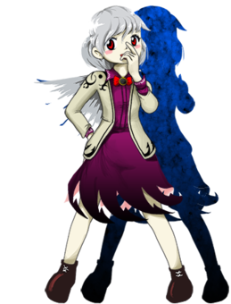
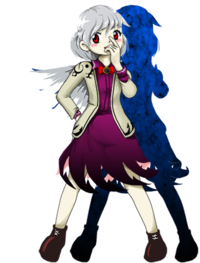

- Welcome to Touhou Wiki!
- Please register to edit. For assistance, check in with our Discord server or IRC channel.
Sagume Kishin
Sagume Kishin kiɕĩn sa̠ɡ̃ɯᵝme̞ | |
|---|---|
|
 Sagume Kishin in Legacy of Lunatic Kingdom Goddess Who Invites Unfortunate Slips of the TongueMore Character Titles | |
| Species | |
| Abilities |
Reversing a situation with her words |
| Location | |
Music Themes | |
| |
Appearances | |
| Official Games | |
| |
| Print Works | |
| |
Sagume Kishin (稀神 サグメ Kishin Sagume) is a Lunarian goddess (specifically, a divine spirit) who was indirectly responsible for the Urban Legend Incident.
General Information[edit]
Sagume appeared as the Stage 4 midboss and Boss in Legacy of Lunatic Kingdom.
Abilities[edit]
- Reversing a situation with her words
When she speaks about a particular situation or event, that situation will eventually proceed to reverse itself, through whatever means possible. If she speaks about an attempt to achieve a goal, it will fail in some way. If she speaks about something bad occurring, it will be resolved in some way. Due to this, she tends to not speak too much and always chooses her words carefully. Note that it is the situation or the event she talks about that will be reversed in some manner; it is not that the opposite of what she says must occur.
In Legacy of Lunatic Kingdom, Sagume had thought of a backup plan to move the Lunar Capital to Gensokyo in case Junko's actions eventually forced the Lunarians to leave their temporary refuge in the Dream World. However, when the player shows up to take care of Junko, Sagume realizes her opportunity to help save the Lunar Capital. By talking to the protagonist about their plan to invade Gensokyo, her ability ensures that the plan will not come to fruition. By doing so, Sagume bets on the likelihood that the reason they will not end up relocating to Gensokyo is because the protagonist will in fact save the Lunar Capital. By talking to the player directly, she forced the situation to reverse around them.
- Occult Balls
Using her powers, Sagume created a secret occult ball. It had the power to change the world by using people's words, and merely being near it would cause false rumors, such as urban legends, to materialize. Although it was just insurance, the plan was to use it to materialize the Lunar Capital in Gensokyo by spreading rumors about NASA hiding the truth about what they saw on the Moon. This also caused numerous lesser urban legends to materialize, starting the events of Urban Legend in Limbo. It is currently in possession of Marisa Kirisame.[1]
Species[edit]
She is a goddess, but she has a part of her that is a Heavenly God (天津神 Amatsukami) represented by the sole wing on her back and a part that is a Earthly God (土着神 Kunitsukami)[2]. Other than being a Lunarian, Sagume can also "tentatively" be classified as a divine spirit, but it is said that her true nature isn't that of a god, an oni, or a departed soul. She is also considered a type of amanojaku.[3]
Background Information[edit]
Name[edit]
Her full name is Sagume Kishin (稀神サグメ). Her last name, Kishin (稀神), means "rare god". It differs from kishin (鬼神), which means "oni god" and the Kijin in Seija Kijin (鬼人), which means "oni human" and forms a part of her and Seija's species, amanojaku.[4]
ZUN also relates her with sagi (サギ) which means Heron (鷺 sagi) and can also be read as swindler (詐欺 sagi).[2]
Origin[edit]
Sagume may be based in part on Ame-no-Sagume (天探女), who is thought to be the basis of amanojaku folklore.
Design[edit]
Sagume has short, light grey hair with a braid on the back, red eyes, and a single wing on her back. She wears a purple dress, the bottom of which is cut into an arrow pattern, with a red microphone bowtie, a tan jacket, and brown shoes.
Sagume's Appearances[edit]
- Legacy of Lunatic Kingdom
Sagume encounters the protagonists in the already deserted Lunar Capital, after revealing the nature of their visit she proceeds to test their strength to see if they're capable of confronting the person attacking the Moon and, by consequence, stop the invasion to Gensokyo.
- Antinomy of Common Flowers
Byakuren Hijiri mentions Sagume as the culprit behind the Urban Legend Incident upon defeating Reisen Udongein Inaba in versus mode.
Relationships[edit]
Due to Eirin being a sage of the Moon before fleeing to the Earth, Sagume seemed be aware of her taking action during Legacy of Lunatic Kingdom events and calls her Lady Yagokoro (八意様 Yagokoro-sama).
Later, Sagume is seen speaking with Eirin in an article of Alternative Facts in Eastern Utopia by Aya, although the subject of the conversation it's unknown.
When Reisen meets Sagume during Legacy of Lunatic Kingdom events, she recognizes her as one of the Goddesses and address her as proper. Sagume recognizes Reisen as "the rabbit that fell to Earth" from Eirin's place.
Gallery[edit]
Sagume's "defeated" portrait in LoLK
Spell Cards[edit]
| Name | Translated | Comments | Games | Stage | ||
|---|---|---|---|---|---|---|
| Total: 11 | ||||||
| 玉符「烏合の呪」 | Orb Sign "Disorderly Flock's Curse" | LoLK | St. 4: E/N | |||
| 玉符「烏合の逆呪」 | Orb Sign "Disorderly Flock's Reverse Curse" | LoLK | St. 4: H | |||
| 玉符「烏合の二重呪」 | Orb Sign "Disorderly Flock's Duplex Curse" | LoLK | St. 4: L | |||
| 玉符「穢身探知型機雷」 | Orb Sign "Impure Body Detection Mines" | LoLK | St. 4: E/N | |||
| 玉符「穢身探知型機雷 改」 | Orb Sign "Impure Body Detection Mines V2" | LoLK | St. 4: H/L | |||
| 玉符「神々の弾冠」 | Orb Sign "Shotgun Coronation of the Gods" | LoLK | St. 4: E/N | |||
| 玉符「神々の光り輝く弾冠」 | Orb Sign "Shining Shotgun Coronation of the Gods" | LoLK | St. 4: H/L | |||
| 「片翼の白鷺」 | "One-Winged White Heron" | LoLK | St. 4: E/N/H/L | |||
| 玉符「金城鉄壁の陰陽玉」 | Orb Sign "Impregnable Fortress Yin-Yang Orbs" | VD | Wrong Tuesday - 2 | |||
| 玉符「神々の写し難い弾冠」 | Orb Sign "Hard-to-Photograph Shotgun Coronation of the Gods" | VD | Wrong Tuesday - 3 | |||
| 夢鷺「片翼の夢鷺」 | Dream Heron "One-Winged Dream Heron" | VD | Wrong Tuesday - 4 | |||
Additional Information[edit]
- In most of her spell card and non-spell card attacks, she makes a lot of use of the flying yin-yangs, a mysterious stage enemy that re-occurs in the Touhou Project, as well as being primarily the only enemy of her stage.
- Even though she has a "defeated" sprite in the game's code, it is never used. ZUN made the image as part of his workflow, but didn't use it as the dialogue after battle is many times longer than the pre-battle dialogue, and didn't like Sagume being in a defeated state the whole time.[5]
Fandom[edit]
Official Profiles[edit]
|  | ○４面ボス 舌禍をもたらす女神 稀神 サグメ 種族：月の民 月の民である。 無口な性格だが、その理由は能力にある。 何かを成そうとしているのなら、それは尽く失敗するし、
しかし、いつまでも夢の世界に閉じ込めておく訳にもいかない。 その為、賢者達は保険として「月の都遷都計画」を打ち立てた。 「月の都遷都計画」は、幻想郷を浄化し、そこに都を作る事だった。 彼女は、幻想郷にはある都市伝説を広める事が近道と考えた。 都市伝説が具現化するようになった頃、誰かが有名な都市伝説を 有名な都市伝説、それが「アポロ計画陰謀論」である。
そんな時、幻想郷の人間がやってきた。 この人間に賭けよう。 |
Stage 4 Boss - Goddess who Invites Unfortunate Slips of the Tongue Sagume Kishin Species: Lunarian A resident of the Moon. She doesn't usually talk much, but this is a result of her ability. Should she try to accomplish something, it will end in failure, To avoid the encroachment of impurity from Junko's attack, the sages of the Moon froze the Lunar Capital. However, they certainly couldn't stay cooped up in the Dream World forever. Thus, the sages proposed the "Lunar Capital Transfer Plan" as insurance. The "Lunar Capital Transfer Plan" was to purify Gensokyo and build a new capital there. She thought that the spread of a particular urban legend in Gensokyo would make a good shortcut. When the urban legends began to materialize, she simply had to wait That famous urban legend was the "Apollo Project Coverup Theory." ...however, this plan was no more than insurance. It was then that one of Gensokyo's humans arrived. I'll place my bet on this human, she thought. |
Official Sources[edit]
- 2015/08/14 Legacy of Lunatic Kingdom - omake.txt (profile, Stage 4 dialogue)
References[edit]
- ↑ Legacy of Lunatic Kingdom - Marisa's Pointdevice/No Miss ending
- ↑ 2.0 2.1 Legacy of Lunatic Kingdom interview with ZUN
- ↑ Legacy of Lunatic Kingdom/Music - Sagume Kishin's theme comments
- ↑ Legacy of Lunatic Kingdom/Music - Sagume Kishin's theme comments
- ↑ Strange Creators of Outer World: Legacy of Lunatic Kingdom interview: Interviewer: "Even when Sagume loses, her clothes don't get messed up."; ZUN: "That's right. I have a picture of her, but I didn't use it (laugh). I drew it as part of my workflow, but it was a waste."; Interviewer: "Because she's strong?"; ZUN: "The dialogue before the battle is short, and the dialogue after it is long, so I couldn't have her stay in the defeated pose the whole time. And it would be embarrassing if her clothes were messed up when she was only testing their powers (laugh)."
| This page is part of Project Characters, a Touhou Wiki project that aims to write proper descriptions for all official characters of Touhou Project. Please keep the character page guidelines in mind when contributing. |